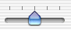
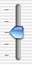
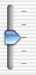

Using Slider Tick Marks
To set the number of tick marks, use setNumberOfTickMarks:. The tick marks are evenly spaced between the minimum and maximum values. For example, if the minimum value is 0, the maximum value is 100, and the tick mark count is five, the tick marks are at 0, 25, 50, 75, and 100. The following figure shows a horizontal bar slider with five tick marks.
The following figure shows a slider with no tick marks.
To set where the tick marks appear, use setTickMarkPosition:. For horizontal sliders, the possible arguments are shown below.
Tick marks below | Tick marks above | |
|---|---|---|
Argument | ||
Illustration |  |
For vertical sliders, the arguments are shown below.
Tick marks below | Tick marks above | |
|---|---|---|
Argument | ||
Illustration |  |  |
The default values are NSTickMarkBelow and NSTickMarkLeft. These arguments are used only with bar sliders; for circular sliders, the tickmarks are always outside the circle.
To restrict a slider’s value to only the values at tick marks, use setAllowsTickMarkValuesOnly:. After a user moves the slider’s knob, the knob jumps to the tick mark nearest the cursor. For example, if a slider is restricted to tick mark values only and has a minimum value of 0, a maximum value of 100, and a marker count of five, the allowable values are 0, 25, 50, 75, and 100. By default, a slider can have any value between its minimum and maximum.
To get the value of the tick mark that’s closest to another value, use closestTickMarkValueToValue:. To get the value that corresponds to a specific tick mark, use tickMarkValueAtIndex:. To find the tick mark closest to a specific point, use indexOfTickMarkAtPoint:. Note that the lowest tick mark has an index of 0.
© 2006 Apple Computer, Inc. All Rights Reserved. (Last updated: 2006-10-03)